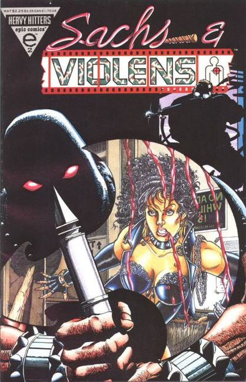
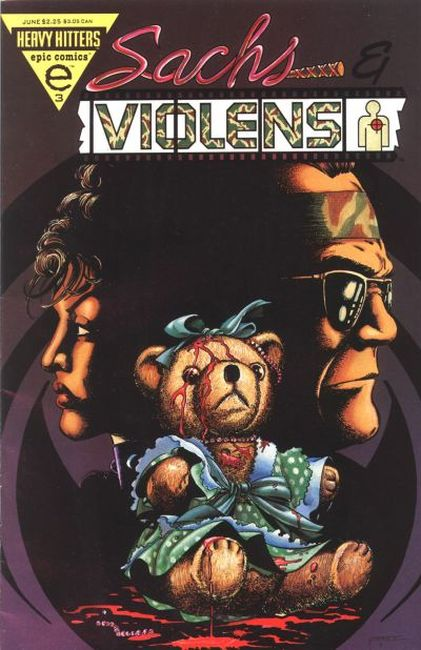
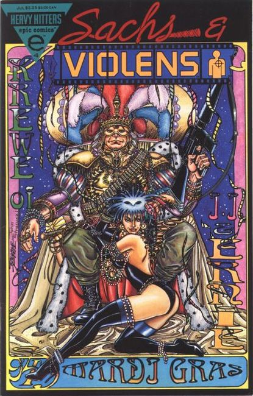

CITY SKYLINE AND MOON IN BACKGROUND. This Heavy Hitters title premieres with a multi-level embossed cover. After a friend's murder, model J.J. Sachs teams up with besotted photographer, Ernie Violens Schultz, to investigate. A series of brutal situations results, thrilling her and repulsing him. If he refuses to indulge her thrill-addiction, will he lose her affection?

J.J. gets more than she bargained for when she battles a group of well-armed snuff photographers. When Violens shows up with a cache of semi-automatic weapons and rescues her, she finds herself...attracted to him. Sexy and no holds barred!

Sachs and Violens collar the vile kingpins of the child pornography ring. After rescuing two children from a snuff factory, they attempt to save twenty others held hostage in the warehouse. The punishment the duo deals out to the perps when they get there is nothing short of grisly, and you won't believe how Sachs and Violens celebrate their victory when it's over.

Mayhem reigns at the Mardi Gras when Sachs and Violens attempt to undermine the Leftrightcentrus's plans to destroy the rowdy festivities. And, as Violens's dark secret is revealed, Sachs finds herself helpless tor resist him!